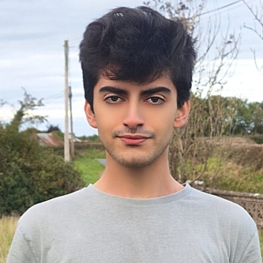
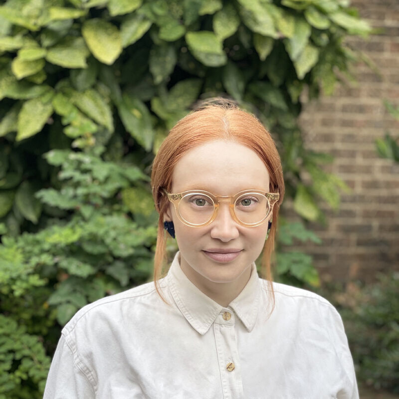

NeurIPS 2026 Workshop
Bringing together efficient reasoning, mechanistic interpretability, and AI safety to build principled structure into Large Reasoning Models.
Large Reasoning Models generate long, unstructured traces — and we can't see inside them.
LRMs solve complex problems by allocating substantial computation before answering. Rather than producing a response directly, they generate a long reasoning trace and condition the final answer on it. These models have achieved strong performance gains in mathematical reasoning, code generation and multi-step inference.
Yet they introduce a new and largely unaddressed challenge: their reasoning process is unstructured, and thus neither interpretable nor controllable. Models output monolithic sequences of thousands of tokens, do not explicitly segment or annotate reasoning steps during generation, and their internal representations do not expose clean boundaries between reasoning stages.
We argue these challenges share a common root: the absence of principled structure in the reasoning process. Revealing structure enables observation — and observation enables control.
Reasoning traces are verbose and redundant, leading to substantial computational waste that scales with model capability.
Solution-space exploration is unmonitored and unguided, limiting adaptability and robustness across problem types.
Generated text is sometimes unfaithful to the model's internal computation, undermining trust in chain-of-thought explanations.
The unstructured thinking process makes LRMs more vulnerable than standard LLMs to jailbreaking and adversarial manipulation.
Why a workshop? Work on these problems is scattered across ML communities — efficient reasoning, mechanistic interpretability, and AI safety each has its own vocabulary and venues. No single community owns the question of reasoning structure. StRICt is designed to build the shared vocabulary these efforts currently lack, with a program centred on cross-community interaction rather than back-to-back talks.
StRICt welcomes submissions exploring the structure of reasoning traces at both the text level and hidden-state level, and how that structure can enhance the controllability, safety, and efficiency of LRMs.
Step granularity, taxonomies of reasoning behaviours, and evaluation of step-level decomposition methods.
Online monitoring of reasoning traces, faithfulness of chain-of-thought, detection of redundant or unproductive reasoning.
Probing methods for reasoning dynamics, alignment between text-level and latent-level structure.
Early-exit strategies grounded in reasoning structure, guided exploration, diversity of reasoning search, interpretable exploration.
Online monitoring for unsafe behaviour before output is produced; latent-space probing for adversarial states; monitorability and CoT obfuscation; attack surfaces specific to LRM reasoning traces.
Datasets and metrics for reasoning step quality, control quality, and faithfulness of reasoning chains.
We invite submissions on all topics listed above. We welcome both novel research contributions and position papers that articulate new perspectives on structuring, interpreting, or controlling LRM reasoning.
To be announced.

